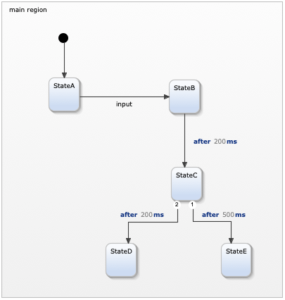

This example demonstrates the two different execution schemes of YAKINDU statecharts: event-driven and cycle-based execution.
The state machine can define one of two execution schemes:
You can select the execution scheme via the @CycleBased or @EventDriven annotations. Write the appropriate annotation to the top of your statechart’s definition section, see sections
"@CycleBased" and
"@EventDriven".
In the cycle-based execution scheme, each run cycle consists of two different phases:
This approach allows for explicitly processing several events at the same time as well as for checking combinations of events, e.g., a guard condition like
[eventA && eventB]. This is very useful for systems that are close to hardware and input signals. Basically it is the
input-process-output (IPO) model.
Please note: In the cycle-based execution scheme, an event that has been raised internally using the raise statement is visible in the run cycle „downstream” only, i.e., in such regions and the states therein that have not yet been processed in the current run cycle. Everything that is „upstream” in the run cycle cannot „see” this event. This is semantically different from the event-driven execution scheme. Read more on this topic in section "Raising and processing an event".
In the
event-driven execution scheme, each incoming event or time event immediately triggers the execution of a run-to-completion step. As a consequence, the state machine will never process two events simultaneously, and a guard condition like
[eventA && eventB] will never become true.
Please note: In the event-driven execution scheme, an event that is raised internally in a run-to-completion step using the raise statement will not be acted upon by any active state „downstream” in the event cycle. The reason is that only a single event can be processed at a time, and this is the event that caused the current run cycle to execute in the first place. The internally-raised event will trigger its own run-to-completion step subsequently. Thus it will be visible to all active states in that RTC. This is semantically different from the cycle-based execution scheme. Read more on this topic in section "Raising and processing an event".

When the state machine is executed with the cycle-based execution scheme, the incoming event input is not processed immediately, but only once a run-to-completion cycle is triggered. This happens periodically as specified by the @CycleBased annotation. For example, if the cycle period is set to 2000 milliseconds, it might take up to 2000 milliseconds after the input event has been raised for the statechart to process it and activate StateB. Same holds for time events. To illustrate this, StateC has two outgoing transitions with different time triggers. With a cycle period of 2 seconds, both time triggers are valid. The state machine will then take the higher prioritized transition, which in this case is the one to StateE. Changing the cycle period from 2000 to 200 milliseconds will cause StateD to be activated as the run-to-completion cycle is executed before the 500ms trigger is raised.
In contrast to that, in event driven mode incoming events as well as time events are processed immediately. Consequently, the state machine will always finish in StateD.